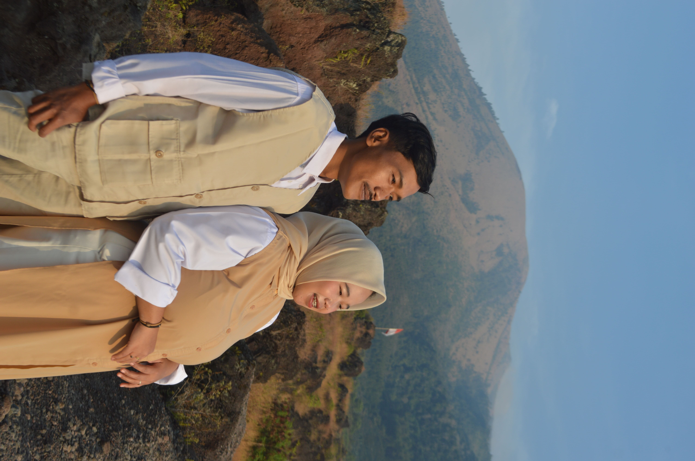
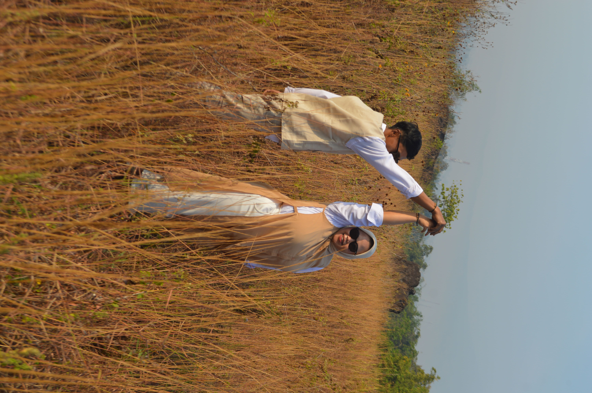
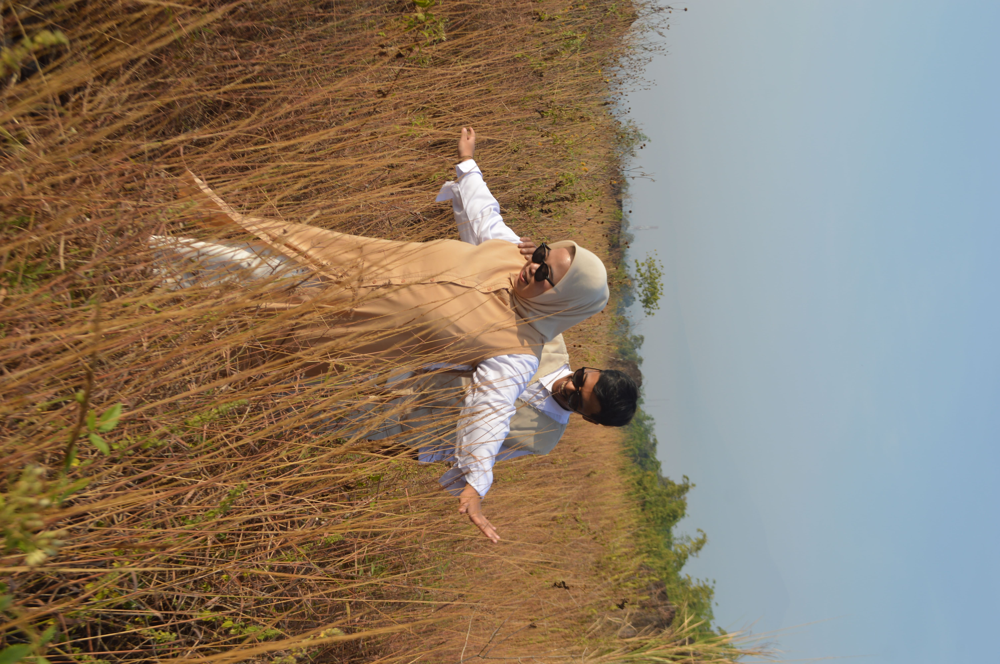
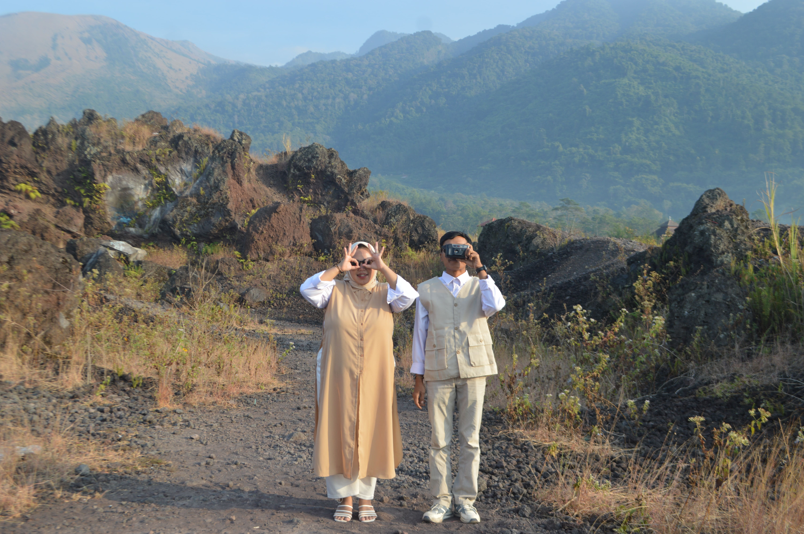

Kisah Kami

Tak pernah terbayang bahwa sebuah lalu lintas maya menjadi awal kisah ini bermula. Lewat perantara layar kecil, percakapan hangat membawa kami makin dekat, merajut rasa yang tumbuh tanpa nama, sebelum akhirnya jarak dan waktu memisahkan jalan kami sejenak.

Setahun jeda berlalu, takdir rupanya belum selesai menuliskan cerita. Garis kehidupan membawa kami kembali bersua dalam hangat yang sama. Di tanggal 23 Agustus 2021, dua hati yang sempat berkelana ini akhirnya memutuskan untuk saling mengikat janji dan melangkah dalam satu pelukan ikatan cinta.

Empat tahun mengarungi samudra tawa dan lika-liku bersama, kedewasaan menuntun kami pada sebuah kepastian. Tepat pada 26 Oktober 2025, kami mantap memeluk masa depan, melangkah menuju gerbang yang lebih serius untuk saling mendampingi seumur hidup.

Kini, kisah panjang yang terajut penuh makna itu sampai pada puncaknya. Dengan ridho Allah dan kehangatan do'a restu dari orang tua serta sahabat, kami siap mengukir janji suci pernikahan, melayari kehidupan baru sebagai pasangan suami istri.